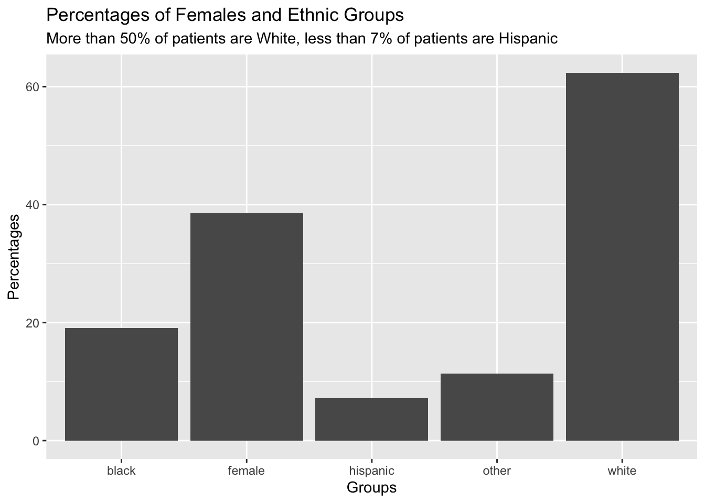

num_of_patients <- accord_key |>
nrow()
calculate_percent <- function(data, column, desired_value) {
percent <- data |>
filter({{column}} == desired_value) |>
nrow()
percent / num_of_patients * 100
}
percent_female <- calculate_percent(accord_key, gender, "Female")
percent_white <- calculate_percent(accord_key, raceclass, "White")
percent_black <- calculate_percent(accord_key, raceclass, "Black")
percent_hispanic <- calculate_percent(accord_key, raceclass, "Hispanic")
percent_other <- calculate_percent(accord_key, raceclass, "Other")Week 4 Presentation
Program - Chapter 25, 26 and 27
- Functions
- Vector functions
- Data frame functions
- Plot functions
- Iteration
- Modify multiple columns with dplyr::across()
- Read multiple files with purrr::map()
- Save multiple outputs
- Important base R functions
- Selecting element(s) with [], $, [[]]
- Apply functions, base R equivalent of map functions
- For loops
- Base R plots
Effects of Intensive Glucose Lowering in Type 2 Diabetes
- New England Journal of Medicine
- Published June 12, 2008
Statistical Analysis Methods
- Power and Sample Size
- Designed with 89% likelihood to detect whether intensive therapy will lower rates of serious cardiovascular events by 15% assuming standard therapy has annual event rate of 2.9%
- Data Analysis
- Checked that 2 groups were similar at the start of the study using chi-square tests and two-sample t-tests
- Compared how long patients in each group experienced primary outcomes using Cox proportional-hazards regression models
- Calculated risk of primary and secondary outcomes in both groups with 95% confidence of the estimates
- Used Kaplan-Meier estimates to find the percentage of patients experiencing events over time in each group
Main Findings
- No significant reduction in primary outcomes
- More mortality in intensive treatment group
ACCORD Data Exercise - Numerically and Visualing Describing the Percentages of Different Groups
- Question: What’s the percentage of females and of each ethnicity group in
accord_key? Describe the results numerically and visually.- Created a function to calculate percentage
- Applied it to all groups (female, White, Black, Hispanic, Other)
- Graphed the percentages
- percentage of female patients:
round(percent_female, digits = 2) - percentage of White patients:
round(percent_white, digits = 2) - percentage of Black patients:
round(percent_black, digits = 2) - percentage of Hispanic patients:
round(percent_hispanic, digits = 2) - percentage of other patients:
round(percent_other, digits = 2)
percentages = data.frame(groups = c("female", "white", "black", "hispanic", "other"), percents = c(percent_female, percent_white, percent_black, percent_hispanic, percent_other))
ggplot(percentages, aes(x = groups, y = percents)) +
geom_col(stat = "identity") +
labs(title = "Percentages of Females and Ethnic Groups",
subtitle = "More than 50% of patients are White, less than 7% of patients are Hispanic",
x = "Groups",
y = "Percentages")